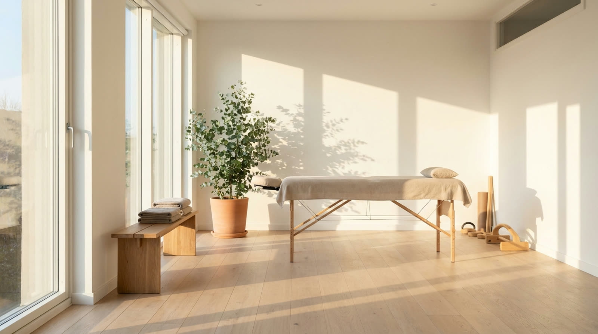

Une entreprise a
une philosophie.
Avant d'avoir un site, avant d'avoir un logo. Elle a une raison d'exister, une manière de traiter les gens, quelque chose qu'elle veut qu'on ressente en poussant sa porte. Mon travail, c'est de trouver ça — et de le rendre visible à l'écran.
Je viens du dessin,
pas du code.
J'ai fait une école d'art : design, dessin, composition. On y apprend une chose avant toutes les autres — regarder longtemps avant de tracer quoi que ce soit. C'est resté ma méthode de travail, et ça explique pourquoi je ne commence jamais un site par un gabarit.
Le dessin
Une page se compose comme une image : ce qu'on voit d'abord, ce qui vient ensuite, ce qu'on laisse respirer. Le rythme, le vide, la lumière. Ce sont des décisions de dessinateur, pas des réglages techniques — et c'est pour ça que deux sites faits par la même personne ne se ressemblent pas.
Ce qui se passe dans la tête du visiteur
Je m'intéresse beaucoup à la psychologie : pourquoi une page inspire confiance et une autre non, pourquoi on hésite, pourquoi on écrit ou pourquoi on referme. Ça ne sert pas à manipuler qui que ce soit — ça sert à ne pas mettre d'obstacle entre vous et la personne qui voulait déjà vous parler.
Je ne demande pas
quelles pages vous voulez.
Un cahier des charges donne une liste de pages. Il ne dit jamais ce qu'est la maison. Alors je pose d'autres questions, et ce sont elles qui décident du site :
- Pourquoi avez-vous commencé ce métier ?Pas la version pour le banquier. La vraie.
- Que doit ressentir quelqu'un qui pousse votre porte ?Confiance, calme, envie, sécurité, respect — ce n'est jamais le même mot, et tout part de là.
- De quoi êtes-vous fier, que personne ne remarque ?C'est presque toujours ça qu'il faut montrer en premier.
- Vers quoi travaillez-vous ?Un site qui ignore où va la maison la fige dans ce qu'elle était l'an dernier.
Ensuite seulement je dessine. Le sentiment que vous m'avez décrit devient des décisions concrètes — et chacune peut s'expliquer.
Vous dites : « qu'ils se sentent en sécurité »
Rythme lent, beaucoup de vide, rien qui clignoteUne page pressée transmet l'urgence. Une page calme transmet la maîtrise.Vous dites : « on est une maison d'artisans »
La matière au premier plan, le geste montré, le texte en retraitOn croit ce qu'on voit se faire, pas ce qui est affirmé.Vous dites : « nos clients hésitent longtemps »
On répond aux objections dans l'ordre où elles arriventUne hésitation restée sans réponse devient un onglet qu'on referme.Peu de projets,
et on apprend l'un de l'autre.
On parle, longtemps, avant que je dessine
Par écrit, à votre rythme, en français, en allemand ou en anglais. Vous m'apprenez votre métier — ses mots, ses saisons, ce qui vous agace chez vos concurrents. Je ne peux pas rendre visible une chose que je n'ai pas comprise.
Vous voyez très vite quelque chose de réel
Un aperçu de votre monde arrive en jours, pas en mois. Pas un document : une page qui bouge, qu'on ouvre sur son téléphone. On juge sur pièces — c'est plus honnête qu'un devis illustré.
Vous corrigez, et vous avez souvent raison
C'est votre maison, pas ma galerie. Quand vous me dites « ça, ce n'est pas nous », c'est une information précieuse : elle m'apprend votre limite, et le site devient plus juste. J'ai un avis et je le défends une fois — après, vous tranchez.
Je reste après la mise en ligne
Une maison bouge : nouveaux services, nouvelles photos, nouvelles saisons. Je préfère peu de clients suivis longtemps que beaucoup de sites livrés puis oubliés.
Une manière de travailler
se voit aussi à ses refus.
- Jamais de gabaritAucun thème acheté, aucun modèle recoloré. Si votre site pouvait être celui d'une autre maison en changeant le logo, je l'ai raté.
- Jamais de preuve empruntéePas de logos de clients que je n'ai pas, pas de témoignages inventés, pas de chiffres décoratifs. Je préfère vous dire que l'atelier est jeune.
- Jamais de cookies ni de traceursNi ici, ni sur ce que je livre. Une page rapide n'a pas besoin de vous suivre pour fonctionner.
- Jamais rien d'inventéNi dans un texte, ni dans une réponse automatique à vos clients. Si une information manque, on la demande — on ne la comble pas.
Cette liste est courte parce qu'elle est vraie. Elle s'allongera avec l'expérience, pas avant.
Racontez-moi
pourquoi vous faites ça.
Pas votre budget, pas le nombre de pages : votre métier, et ce que vous voulez qu'on ressente. Une ligne suffit pour commencer — je réponds le jour même, et si je ne suis pas la bonne personne pour votre projet, je vous le dirai franchement.
← Voir les métiers